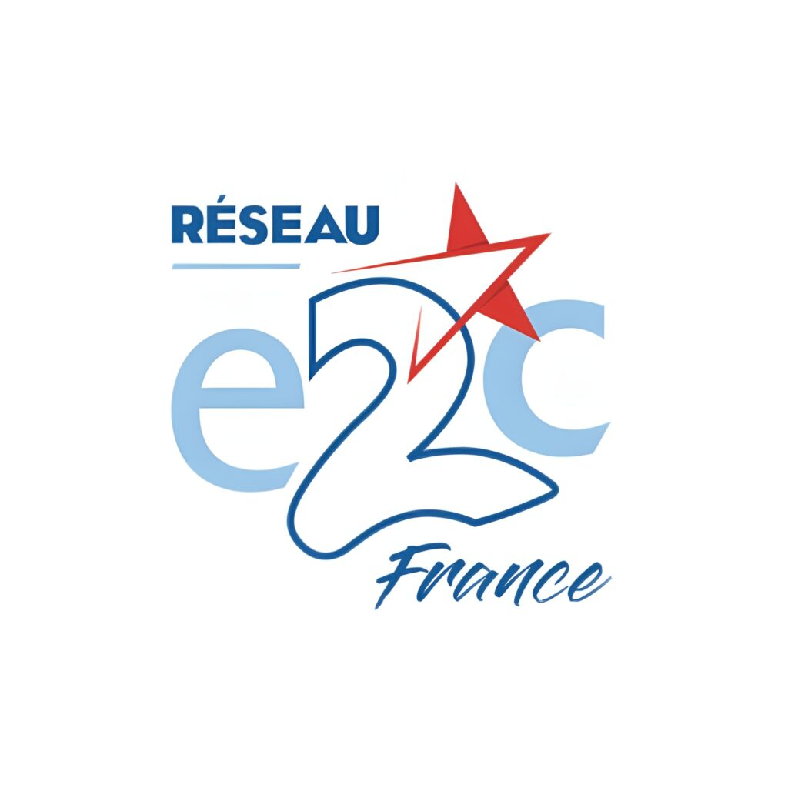
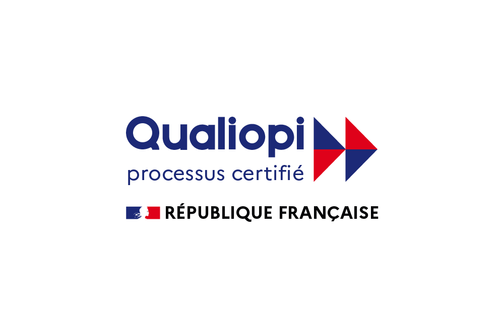
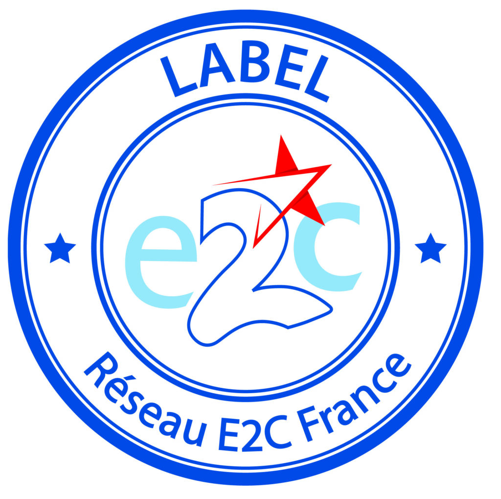
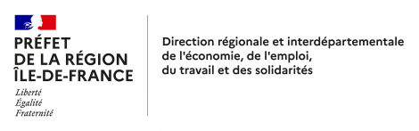
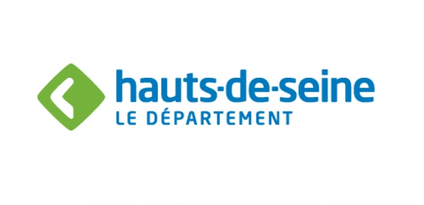
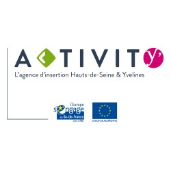

1/3 Allée du Parc de Garlande, 92220 BAGNEUX
Prochaines réunions d’information :
- Mercredi 6 janvier 2027
- Mercredi 27 janvier 2027
- Mercredi 17 février 2027
- Mercredi 10 mars 2027
- Mercredi 31 mars 2027
Un dispositif de formation innovant au service de l’insertion professionnelle des jeunes dans les Hauts-de-Seine.
L’École de la 2e Chance des Hauts-de-Seine accompagne des jeunes vers l’emploi et la formation en leur offrant un parcours personnalisé, fondé sur la confiance et l’action. Portée par une équipe engagée et un réseau d’entreprises partenaires, elle agit chaque jour pour construire des trajectoires durables et révéler les potentiels.
J'ai entre 16 à 25 ans et jusqu'à 30 ans pour les personnes en situation de handicap, avec ou sans diplôme, et je souhaite être accompagné pour accéder à un emploi ou à une formation.



Prochaines réunions d’information :
Prochaines réunions d’information :
Entrées au fil de l’eau • Réunions d’information collective tous les mardis après-midi.
Parcours métiers de la petite enfance : ouverture le 30 novembre 2026. Contactez-nous pour connaître les modalités d’admission et préparer votre entrée à l’E2C 92 !
Je m'inscris à la réunionL’E2C 92 accompagne les jeunes de 16 à 25 ans et jusqu'à 30 ans pour les personnes en situation de handicap, avec ou sans diplôme, pour accéder à un emploi ou à une formation.
Chaque contribution renforce l’accompagnement des jeunes et permet de leur ouvrir un accès concret à l’emploi, grâce à l’engagement des entreprises aux côtés de l’École de la 2e Chance des Hauts-de-Seine.
Découvrir Handicap →


